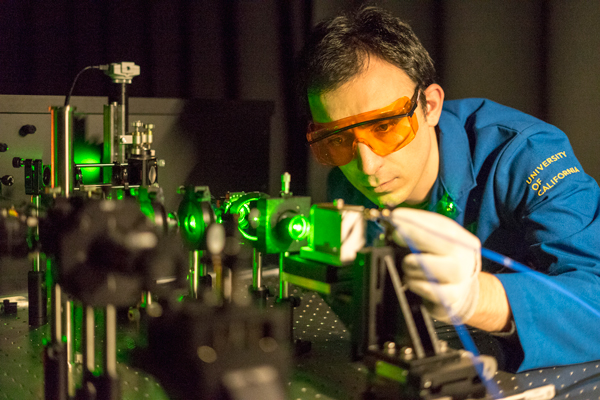
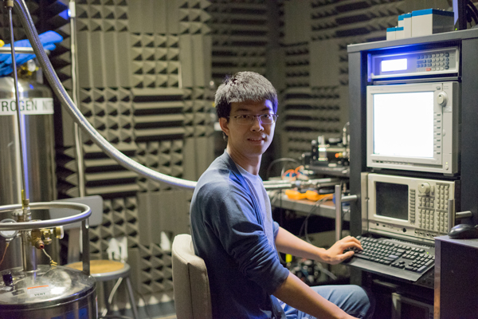

Balandin Group’s expertise and research interests cover a broad range from solid-state physics theory to experimental investigation of advanced materials and fabrication of nano-devices with applications in electronics and energy conversion. Balandin Group is internationally recognized for pioneering studies of graphene’s thermal properties, discovery of unique features of phonon thermal transport in two-dimensional materials, as well as the first proposals and demonstrations of practical applications of graphene in thermal management of electronics.
The Raman spectroscopy based optothermal technique developed in Balandin Group for the first measurements of the thermal conductivity of graphene became a common method for investigating thermal properties of various two-dimensional materials. Balandin Group is known for its key contributions to the development of nanoscale phonon engineering and phononics field. It accomplished a number of the firsts in the field: from the theoretical possibility of controlling thermal conductivity by spatial confinement of the acoustic phonon dispersion and density of states to experimental demonstration of confined acoustic phonon branches in semiconductor nanowires.
Balandin Group is also recognized for its works on low-frequency electronic noise in materials and devices, as well as practical realization of a number of innovative devices based on graphene and other two-dimensional materials. Among recent achievements are the first demonstration of the voltage controlled oscillator operating on charge-density-wave effects at room temperature. The current research activities of Balandin Group are focused on development of two- and one-dimensional devices based on charge density waves, Brillouin – Mandelstam spectroscopy of phonons and magnons, thermal management applications of graphene, and low-frequency electronic noise spectroscopy of materials and devices.
Balandin group consists of two research units and teams: Nano-Device Laboratory (NDL) and Phonon Optimized Engineered Materials (POEM) Center.
The NDL team is engaged in device focused research, which involves preparation of two-dimensional materials, device fabrication in the UCR Nanofabrication Cleanroom Facility, and nanoscale device testing. The NDL facilities include a specialized 2D Transfer Laboratory and Low-Frequency Noise Laboratory.
The POEM team conducts materials characterization research focused on phonon and thermal properties of advanced materials. The POEM research activities include Raman spectroscopy, Brillouin – Mandelstam spectroscopy, measurements of thermal properties, composite synthesis, and testing thermal interface materials, following industrial standards. The POEM unit is located in the MS&E Building and features a unique Brillouin – Mandelstam spectrometer for investigation of acoustic phonons and magnons. The advanced micro-Raman spectrometer with the low-wave number, low-and-high temperature capabilities and multiple excitation lasers, including UV, is housed in a separate Raman Spectroscopy Laboratory. The POEM unit is located in the MS&E Building and features a unique Brillouin – Mandelstam spectrometer for investigation of acoustic phonons. The advanced micro-Raman spectrometer with low-wave number, low-temperature and multiple laser excitation capability (including UV) is housed in a separate Raman Laboratory.